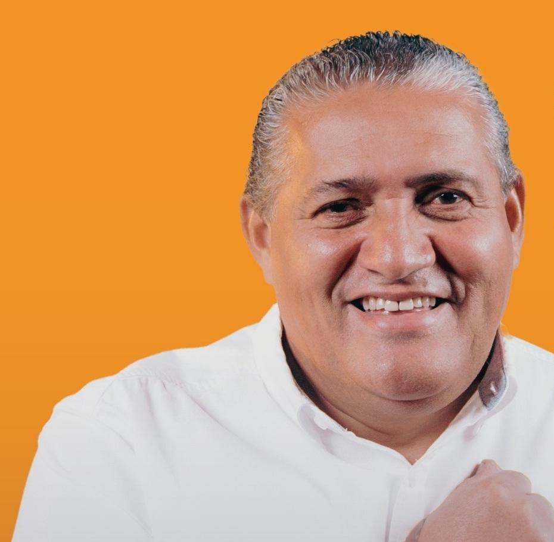
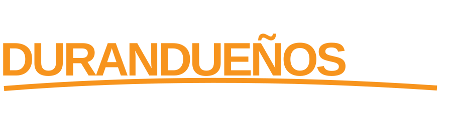

ASOMOS DURANDUEÑOS
01 / 07 Alimentación
Canasta Durandueña
Asistencia alimentaria mediante canastas de víveres mensuales durante la administración municipal de Rodrigo Aparicio.
Canastas mensuales10.000hogares vulnerables
NACIDO Y CRIADO. COMPROMETIDO CON DURÁN.
Siete programas. Un mismo compromiso:
estar del lado de las familias durandueñas.

Resolver los problemas de servicios básicos, legalización, orden y seguridad es una prioridad. También lo es acompañar a las familias que más lo necesitan.
El Plan Social Familiar Somos Durandueños propone llevar esa ayuda a su máxima expresión, desde el primer año de la administración municipal de Rodrigo Aparicio.
Descargar el plan completo ↓familias como meta de cobertura
programas para acompañarlas
sistema de inscripción y seguimiento
Un plan pensado para lo que importa:
la vida de tu familia, en cada etapa.
Asistencia alimentaria mediante canastas de víveres mensuales durante la administración municipal de Rodrigo Aparicio.
Canastas mensualesCapacitación gratuita en administración, ventas, marketing digital, inteligencia artificial, oficios, costos y formalización de negocios, con acompañamiento productivo.
Capacitación gratuitaEl carnet incluye a tus mascotas: consultas básicas, esterilización, vacunación y desparasitación. Atención a animales rescatados y campañas de tenencia responsable.
Cuidado y prevenciónAtención primaria, prevención, control de enfermedades crónicas y orientación médica para las familias afiliadas, mediante un convenio con las autoridades sanitarias.
Atención primariaAnte la pérdida de un integrante de la familia afiliada, el plan contempla exoneraciones o subsidios autorizados de servicios del cementerio municipal.
Apoyo a las familiasConversaciones con universidades e institutos para generar convenios que acerquen gratuitamente a Durán programas académicos, educación continua, formación técnica y vinculación comunitaria.
Ciberseguridad · Inteligencia artificial · Ciencia de Datos · Energías Renovables · Sistemas Fotovoltaicos · Automatización Industrial · Mecatrónica · Desarrollo de Software y Cloud · Ingeniería en Computación · Ingeniería Eléctrica · Ingeniería de Minas · Geología · Ingeniería de Software y Sistemas · Gastronomía · Marketing · Turismo · Comercio Exterior · Diseño Gráfico y otras áreas.
Las familias afiliadas podrán calificar a ayudas económicas para educación superior, desarrollo de emprendimientos o mejoras en la infraestructura de la vivienda.
Apoyo económico sujeto a calificaciónEl plan contempla programas institucionales con presupuesto, cobertura, requisitos públicos y mecanismos de evaluación.
03 / RODRIGO APARICIO
A través de la Fundación Rodrigo Aparicio Pérez, la ayuda social ha tomado forma en donaciones, brigadas médicas y veterinarias, capacitaciones y ferias de emprendimiento.
“Jamás dejaremos de lado la ayuda social.”Rodrigo Aparicio@donaparicio.ec ↗
La propuesta contempla un carnet familiar y un sistema único de inscripción y seguimiento. Los beneficios se desarrollarían una vez posesionada la nueva administración municipal.
Información del jefe o jefa de hogar y de los integrantes de tu familia.
La incorporación estará sujeta a los requisitos de los programas.
Un carnet para el acceso y seguimiento de los beneficios del plan.
Completa y descarga tu ficha. No se envían datos ni se realiza una inscripción oficial desde esta web.

REPRESENTACIÓN DEL CARNET PROPUESTO
El artículo 249 del COOTAD establece una asignación mínima del 10 % de los ingresos no tributarios municipales para programas sociales de atención prioritaria.
EL FUTURO EMPIEZA CON NOSOTROS